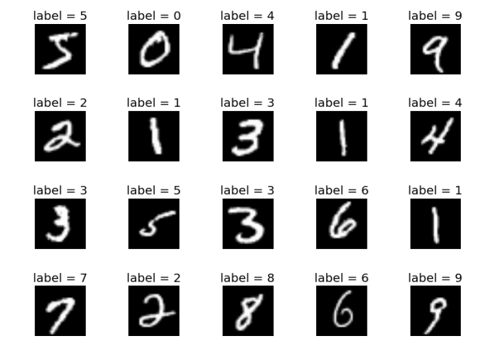
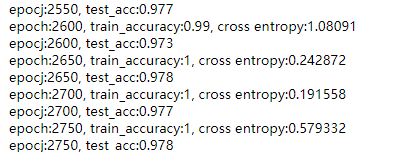

MNIST 数据集主要由一些手 写数字的图片和相应的标签组成，图片共有10类，分别对应这0-9的阿拉伯数字大致就像这样：

原始的 MNIST 数据库一共包含下面 4 个文件
| 文件名 | 数据类型 |
|---|---|
| train-images-idx3-ubyte.gz | 训练图像数据 |
| train-labels-idx 1-ubyte.gz | 训练图像的标签 |
| t10k-images-idx3-ubyte.gz | 测试图像数据 |
| t10k-labels-idxl-ubyte.gz | 测试图像的标签 |
图像数据是指很多张手写字符的图像，图像的标签是指每一张图像实际对应的数字是几，也就是说，在MNIST数据集中的每- -张图像都事先标明了对应的数字。
在MNIST数据集中有两类图像:一类是训练图像(对应文件train-images- idx3-ubyte.gz和train-labels-idx1-ubyte.gz), 另一-类是测试图像(对应文件t10k-images-idx3-ubyte.gz和t10k-labels-idx1-ubyte.gz )。训练图像一共有60000张,供研究人员训练出合适的模型。测试图像一共有 10000张，供研究人员测试训练的模型的性能。在TensorFlow 中，可以直接用python代码下载并提取。
1.导入库
1 | import tensorflow as tf |
其中的 mnist就是导入mnist数据集的python对象了
2.导入数据， 构建Dataset对象
通过mnist对象中的input_data.read_data_sets 导入数据集，其中one_hot要设置为True，这样数据集的labels就会变成one-hot编码的形式了。
1 | mnist = mnist.input_data.read_data_sets('MNIST_data', one_hot=True) |
然后我们构建Dataset对象使用tf.data.Dataset中的from_tensor_slices方法导入数据构建两个Dataset对象，训练集和测试集。注意其中的shuffle非常重要，它的作用是打乱数据集，否则很容易出现过拟合的情况。然后用batch方法将数据集中的 n个连续元素堆叠为一个元素，通过下面的代码每次从迭代器中取数据，一次可以取到100个的训练数据或者1000个测试数据
1 | train_dataset = tf.data.Dataset.from_tensor_slices((mnist.train.images, mnist.train.labels)).shuffle(10000) |
接下来我们初始化一个迭代器，并将数据集绑定
1 | iterator = tf.data.Iterator.from_structure(train_dataset.output_types, train_dataset.output_shapes) |
3.设置占位符
我们需要三个占位符， keep_prob应用于网络中的dropout防止过拟合。 x是特征，需要经过reshape，将他从[-1, 784]的shape转化成[-1. 28, 28, 1]这样图片的形式。还有标签y
1 | keep_prob = tf.placeholder(tf.float32, []) |
4. 构建CNN神经网络
我们设置三层的卷积网络每次卷积都用relu函数作为其激活函数，经过这个神经网络，原来[sample, 28, 28, 1]的数据将会变成[sample, 7, 7, 128]
1 | x = tf.layers.conv2d(x, filters=32, kernel_size=5, strides=1, padding='same', activation=tf.nn.relu) |
然后flatten和全连接成为[sample, 7x7x128]
1 | x = tf.layers.flatten(x) |
5.计算loss和accuracy
1 | cross_entropy = tf.reduce_sum(tf.nn.softmax_cross_entropy_with_logits(logits=x, labels=y)) |
6.运行模型
这里我们打印出模型对训练集、测试集的准确率以及损失
1 | sess = tf.Session() |
7.结果

可以看到模型的准确率可以达到接近百分之九十八